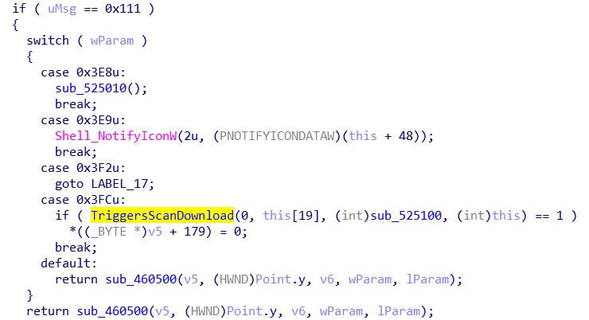

In the world of privlige escalation, 3rd party elevated service programs are espically interesting to look at. One such program is Sophos' HitmanPro.Alert (HMPA).
This program is designed to work with an additional AV product to provide "advanced" detection and prevention capabilities against malware and exploits.
However, this HMPA became interesting when I observed this message in my kernel debugger:
Just from this message there are a couple of issues I had to research. Are downloads really over HTTP? What does an update look like (full exe or just dll plugin)? Is the directory really a low privileged controlled directory?
Using Wireshark I was able to identify that the downloads were really HTTP (they use URLDownloadToFile). Secondly, using a proxy I was able to get a file to appear in user's temp directory. The "update" is just the full hmpalert.exe (yes, the one that is downloaded when you first install). Depending on which flag was used in the command line "/service" for the service, "/tray" for the tray icon and user interactive version, etc... But they are all the same executable.
After fiddling with the proxy server, I discovered the service will execute whatever file you give it, as long as it is digitally signed. It's important to note that ANY signer is accepted. This means that anyone with a couple hundered bucks and a "valid" company someone could spoof updates. The only issue is that update checks only happen on startup and ~60 minutes.
While the possiblity of RCE is interesting, I was looking for LPE and discovered something else. The "Scan" feature of HMPA actually donwloads HitmanPro (not Alert) from "http://get.hitmanpro.com" which could also be spoofed. This however, can be triggerd at any time because the "/tray" instance of HMPA listens for window messages.

The actual communication with the "/service" instance takes place over named pipes, but simply broadcasting to all windows with SendMessage with the proper Msg and Param allows for any user to trigger a download and run (under SYSTEM account) of the scanner. Because the program is downloaded to the current user's temp directory (like the update) I figured DLL hijacking would work. However, the scanner program by Sophos was very careful to only from System32. Everything then changed when I realized that the downloading of the scanner took place in the "/tray" instance which meant that a local proxy could work to spoof the downloads. Using InternetSetOption with approprite flags, a user can set the global proxy which applies to all processes running as that user (so not SYSTEM processes).In the end, the PoC I sent to Sophos did the following:
The client "/tray" then notifys the "/service" which executes as SYSTEM the signed binary. Because any signed binary is allowed, a DLL hijacking, or simply getting a certificate could led to LPE for custom code. I worked with Sohpos' PSIRT to fix the issue. They published an advisory which can be found here. In addition, I've uploaded the PoC code which can be downloaded here. To my knowledge Sophos fixed the problem by only executing images signed by their certificate.